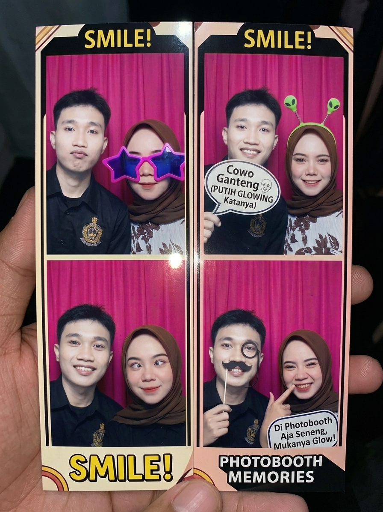
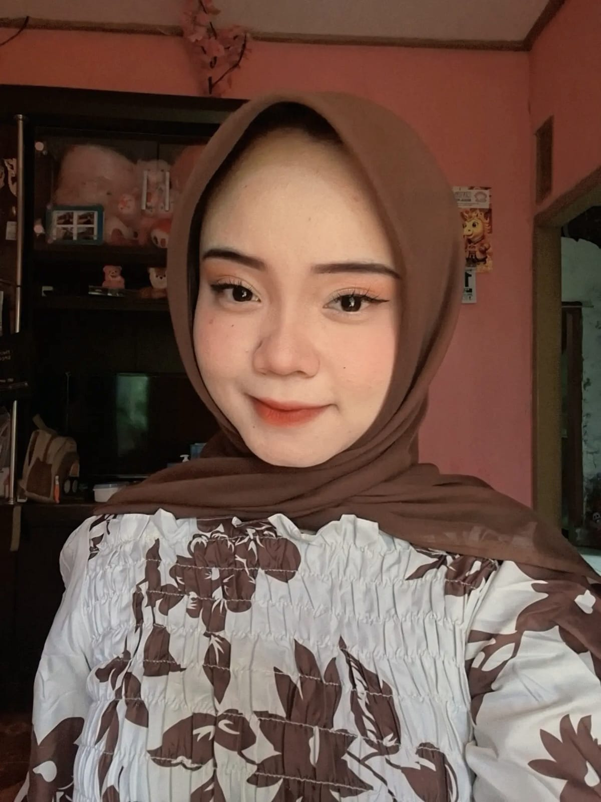
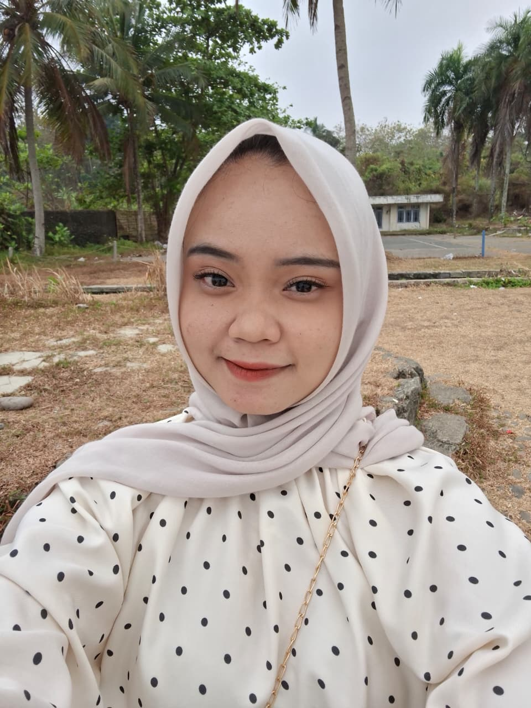
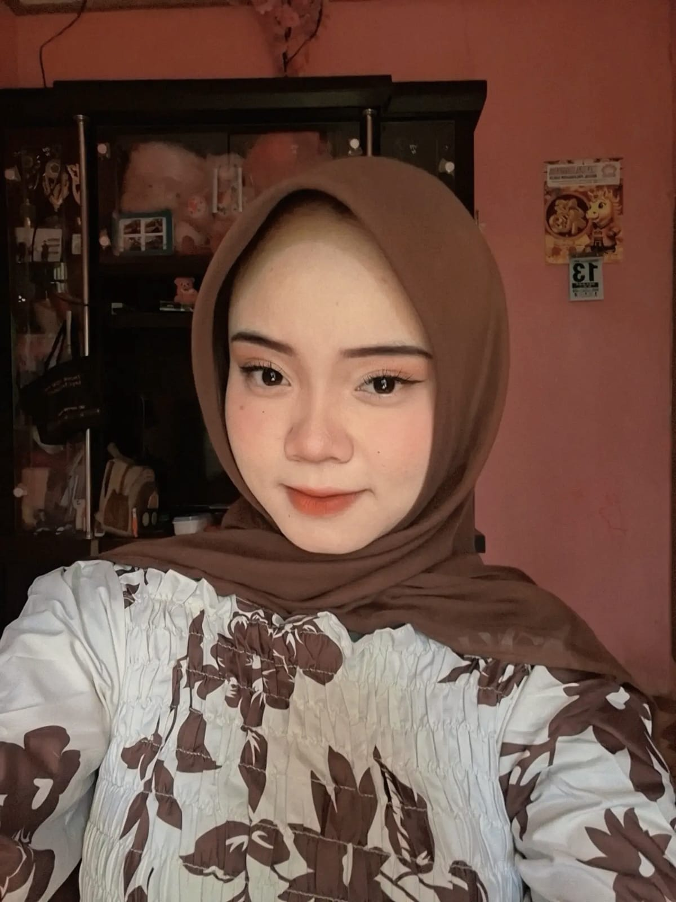
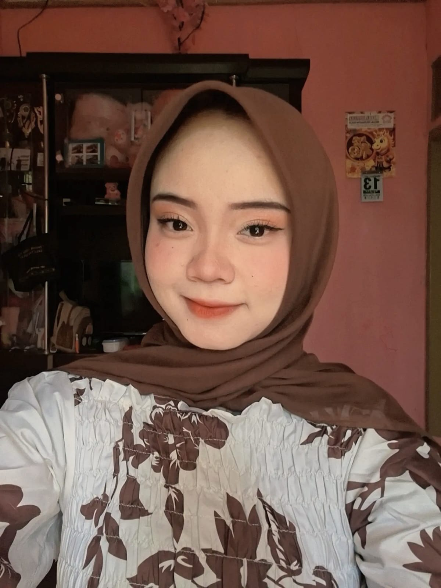

Awal cerita kita ♡
✦ SEBUAH KEJUTAN KECIL UNTUKMU ✦
Dari sekian banyak hal indah di dunia,
aku paling bersyukur karena bisa mengenal kamu.
Kamu adalah rumah yang selalu ingin aku tuju. ♡
Buka kejutan kita ♡OUR LITTLE SOUNDTRACK
Ada lagu yang terdengar biasa, sampai lagu itu mengingatkan aku padamu.
🎵 Lagu untuk Dira Sayang
LITTLE MOMENTS, BIG FEELINGS
Ganti foto-foto ini dengan momen favorit kalian.





Awal cerita kita ♡
OPEN WHEN YOU NEED A HUG
Dira sayang,
Terima kasih sudah hadir di hidupku. Terima kasih untuk tawa, cerita, dan hal-hal sederhana yang jadi istimewa karena ada kamu.
Aku tahu aku belum sempurna. Aku masih belajar untuk mendengar lebih baik, menjaga perasaanmu, dan menunjukkan sayang lewat tindakan, bukan hanya kata-kata.
Semoga kamu selalu punya alasan untuk tersenyum. Kalau suatu hari dunia terasa melelahkan, semoga kamu ingat bahwa kamu berharga dan pantas disayangi dengan tulus.
Aku sayang kamu, hari ini dan seterusnya. ♡
— seseorang yang selalu mendoakanmu
ONE LAST THING...
Terima kasih sudah menjadi bagian dari ceritaku.
🎵 Lagu untuk Dira Sayang